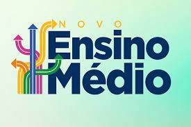

A Lei nº 13.415/2017 alterou a Lei de Diretrizes e Bases da Educação Nacional e estabeleceu uma mudança na estrutura do ensino médio, ampliando o tempo mínimo do estudante na escola de 800 horas para 1.000 horas anuais (até 2022) e definindo uma nova organização curricular, mais flexível, que contemple uma Base Nacional Comum Curricular (BNCC) e a oferta de diferentes possibilidades de escolhas aos estudantes, os itinerários formativos, com foco nas áreas de conhecimento e na formação técnica e profissional.
A mudança tem como objetivos garantir a oferta de educação de qualidade à todos os jovens brasileiros e de aproximar as escolas à realidade dos estudantes de hoje, considerando as novas demandas e complexidades do mundo do trabalho e da vida em sociedade.
